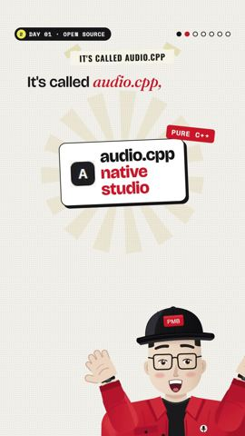

VOICE2026-11-27
audio.cpp: free local AI audio
Clone voices, make music and transcribe speech on your own computer. Free, open source, Windows, Mac and Linux.
Open the guide →Official linkReleases (downloads)Model licencesEach model keeps its own licence. Some are non-commercial.